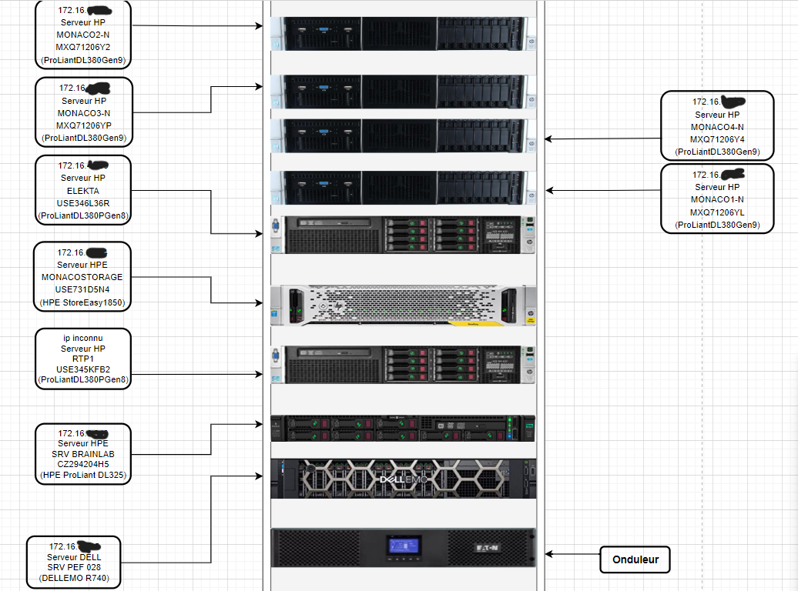
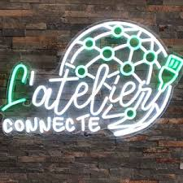

durant mes deux années de bts, j'ai entrepris deux projets de cours, ainsi que dix semaines de stage en entreprise
dans cette partie je vais synthétiquement expliquer ce que j'ai eu à faire, et ce que j'ai fait
formatage d'ordinateur
les membres du serivce nous avaient demandé de vérifier le bon état de marche du matériel informatique qui n'était plus utilisé, de nettoyer les ordinateurs, ainsi que de les formater, dans l'objectif de les donner aux membres du personnel qui en feront la demande
préparation de matériel informatique

il nous a été demandé de préparer le matériel informatique neuf afin de pouvoir le mettre à disposition du personnel
mise en place d'un schéma physique
nous avons également du réaliser des schémas des baies de serveur physique présentes dans l'hôpital
création de formulaire sur hopital manager

CONÇUE SUR LES TECHNOLOGIES WEB LES PLUS RÉCENTES, LA SOLUTION HOPITAL MANAGER MET À DISPOSITION UN ÉVENTAIL DE RÈGLES ET DE PROCESSUS VISANT À GARANTIR LA COORDINATION DES SOINS, DANS LE CADRE DES RÉFORMES. afin de nous familiariser avec ce logiciel il nous fut demander de réaliser des formulaires
mise en place d'un site vitrine pour l'entreprise Atelier Connecté
un site ayant pour objectif de présenter les activités de l'entreprise, furent également implémentés une carte afin que les utilisateurs puissent voir où se trouve l'atelier et un formulaire de contact
mon projet de cours était un site marchand pour une entreprise fictive de vente de jeux de sociétés
Création d'une api fonctionelle

l'api a pour objectif de gérer principalement les fonctionnalités crud des entités utilisateur, jeux, et commande
Création d'un site fonctionel

un site marchand sur le thème du jeu de société proposant aux utilisateurs la possibilité de se connecter, et de passer des commandes